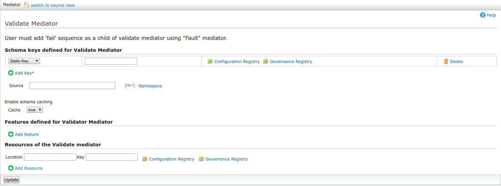

The mediator validates the result of the evaluation of the source xpath expression, against the schema specified. If the source attribute is not specified, the validation is performed against the first child of the SOAP body of the current message. If the validation fails, the on-fail sequence of mediators is executed. Properties could be used to turn on/off some of the underlying features of the validator (See http://xerces.apache.org/xerces2-j/features.html)
Schema location
XPath expression to extract the XML that need to be validated. If not specified validation is performed against the first child of the SOAP body
Here is the only mandatory feature supported by the validator, "http://javax.xml.XMLConstants/feature/secure-processing". For more information look at http://java.sun.com/javase/6/docs/api/constant-values.html#javax.xml.XMLConstants.FEATURE_SECURE_PROCESSING
The resources are external schema resources, which can be used to validate the messages
Note: If user configure WSO2 ESB with WSO2 Governance Registry and if he uploads all the required files as *.gar file (described in WSO2 GREG documentation), uer can provide only the base schema when he provides schemas. There is no need to provide all required imported schemas since ESB is able to resolve the imported resources using only the base schema. Please note that for the above function user needs to uncomment the following lines @ synapse.properties file which is avilable in ESB_HOME/lib/core/WEB_INF/classes folder.
synapse.schema.resolver=org.wso2.carbon.mediation.initializer.RegistryXmlSchemaURIResolver